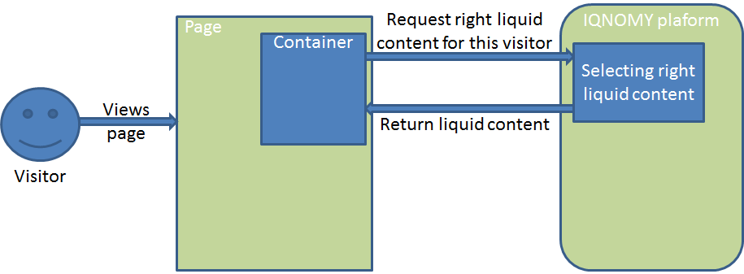

Liquid Internet¶
Every Container can select the Liquid Content based on different matching methods. Depending on the selection method choosen while configuring the container the selector will use a method. You can choose to use for 30% one method and for 70% another. This way the diffent methods can be compaired.

Methods¶
- Dimension
- If a marketeer wants to target the container you can use this technique. eg. We target ‘prospect’ our banner ‘get invited’
- Semantic
- This will use the txt form the webpage and find liquid content that is similar to this page. Blogs and newssites use this technique which automaticly will find relating webpages without using tagging.
- Visitor classification
- Selflearning technique. IQNOMY will learn from visitor behavior and profile which liquid contents are best for this visitor. Every day this will become smarter because it uses the knowledge from all visitors to predict this visitor.
- Visitor semantic
- Depending on what the visitor reads IQNOMY finds out what other content is relating to this visitors interests.
- Random
- IQNOMY will random show content that is being used in this container. This functionality can be used to compare the results with the other techniques
- Fixed
- You use the IQNOMY techniques but want to know what the results would be in the situation that you were using before. We can present a percentage of your visitors with this technique so you can compare the results.
Escalation¶
If a method can’t be used the fallback will start. In this escalation only the ‘Random’ or ‘Fixed’ method can be choosen.